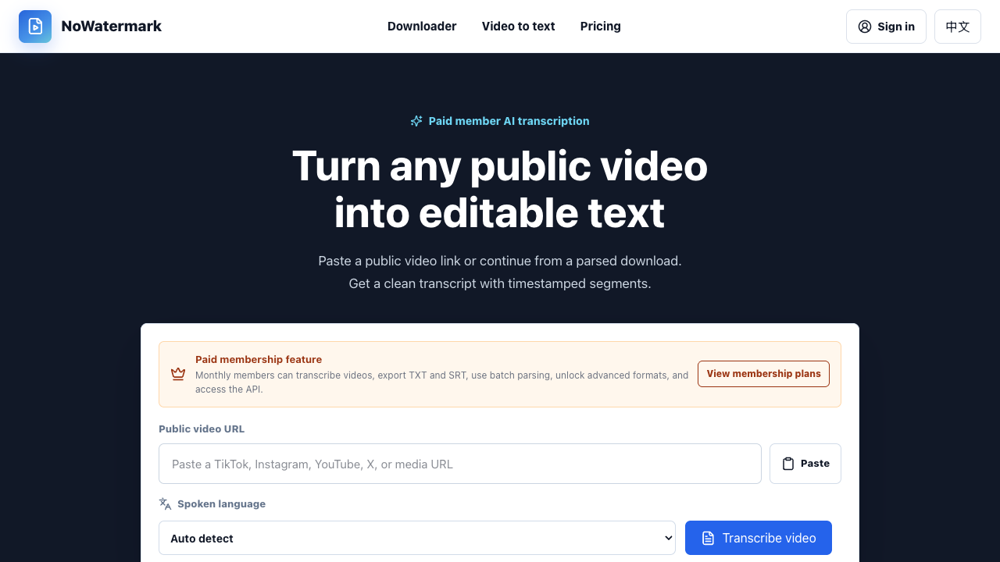

免费基础解析
无需登录，支持单条公开链接的 480P 与 720P 解析。
从链接到素材
支持 TikTok、Instagram、YouTube、X / Twitter、Facebook 等平台的公开链接。主节点不可用时，系统会继续尝试健康的备用解析服务。
无需登录，支持单条公开链接的 480P 与 720P 解析。
不必为不同社交平台反复寻找不同下载工具。
主服务失败后自动尝试可用节点，减少手动切换。
解锁批量、音频、静音、高清画质、转写和 API。
只需三步
从原平台复制公开视频或帖子的分享链接。
粘贴链接，选择所需输出格式并启动解析。
预览视频、打开媒体文件，或复制得到的直链。
月度会员工作流
直接从公开视频链接提取音频并生成带时间轴的文本。适合访谈、课程、播客切片和口播素材整理。

适用场景
保存公开参考素材，提取音频，并生成字幕初稿。
集中处理多个平台的公开视频，减少重复操作。
把公开视频中的语音整理为可检索、可编辑文本。
通过会员 API Key 接入视频解析和转写工作流。